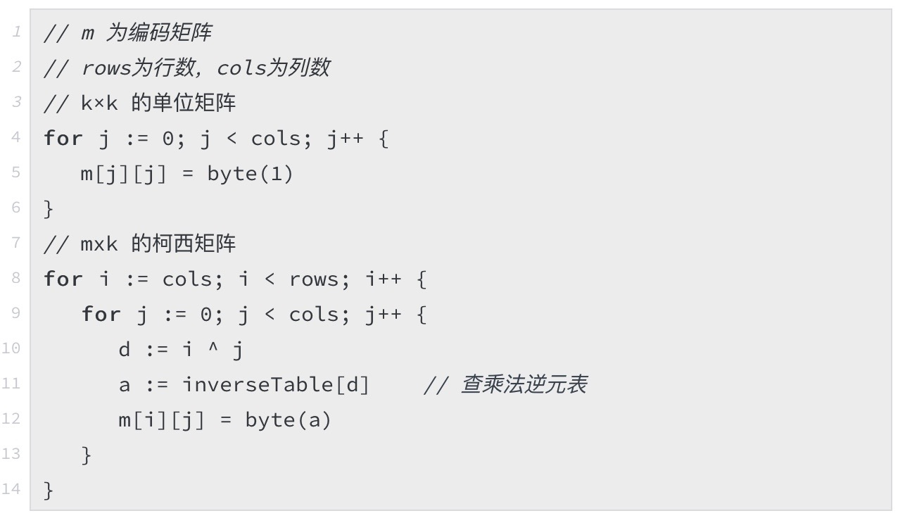
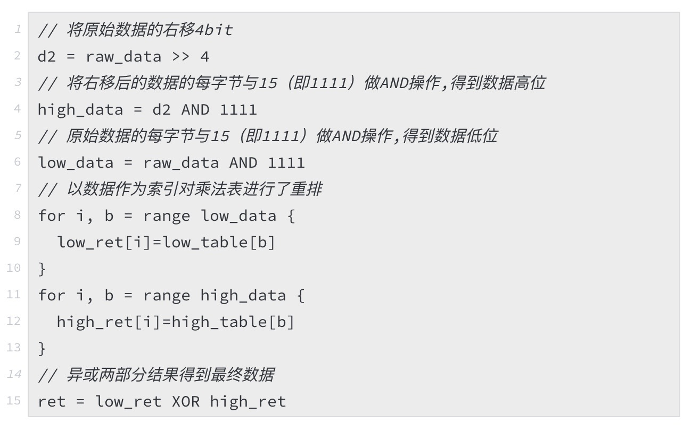

实现高性能纠删码引擎作者介绍徐祥曦，七牛云工程师，独立开发了多套高性能纠删码/再生码编码引擎。 柳青，华中科技大学博士，研究方向为基于纠删码的分布式存储系统。 前言在上篇《如何选择纠删码编码引擎》中，我们简单了解了Reed-Solomon Codes（RS 码）的编／解码过程，以及编码引擎的评判标准。但并没有就具体实现进行展开，本篇作为《纠删码技术详解》的下篇，我们将主要探讨工程实现的问题。 这里先简单提炼一下实现高性能纠删码引擎的要点：首先，根据编码理论将矩阵以及有限域的运算工程化，接下来主要通过SIMD指令集以及缓存优化工作来进行加速运算。也就是说，我们可以将RS的工程实现划分成两个基本步骤：
这需要相关研发工程师对以下内容有所掌握:
接下来，我们将根据这两个步骤并结合相关基础知识展开实现过程的阐述。 理论工程化以RS 码为例，纠删码实现于具体的存储系统可以分为几个部分：编码、解码和修复过程中的计算都是在有限域上进行的；编码过程即是计算生成矩阵（范德蒙德或柯西矩阵）和所有数据的乘积；解码则是计算解码矩阵（生成矩阵中某些行向量组成的方阵的逆矩阵）和重建数据的乘积。 有限域运算有限域是纠删码中运算的基础域，所有的编解码和重建运算都是基于某个有限域的。不止是纠删码，一般的编码方法都在有限域上进行，比如常见的AES 加密中也有有限域运算。使用有限域的一个重要原因是计算机并不能精确执行无限域的运算，比如有理数域和虚数域。 此外，在有限域上运算另一个重要的好处是运算后的结果大小在一定范围内，这是因为有限域的封闭性决定的，这也为程序设计提供了便利。比如在RS中，我们通常使用GF(2^8)，即0～255这一有限域，这是因为其长度刚好为1字节，便于我们对数据进行存储和计算。 在确定了有限域的大小之后，通过有限域上的生成多项式可以找到该域上的生成元[1]，进而通过生成元的幂次遍历有限域上的元素，利用这一性质我们可以生成相应的指数表。通过指数表我们可以求出对数表，再利用指数表与对数表最终生成乘法表。关于本原多项式的生成以及相关运算表的计算可以参考我在开源库中的数学工具。[2] 有了乘法表，我们就可以在运算过程中直接查表获得结果，而不用进行复杂的多项式运算了。同时也不难发现，查表优化将会成为接下来工作的重点与难点。 选择生成矩阵生成矩阵(GM, generator matrix) 定义了如何将原始数据块编码为冗余数据块，RS 码的生成矩阵是一个 n 行 k 列矩阵，将 k 块原始数据块编码为 n 块冗余数据块。如果对应的编码是系统码(比如 RAID)，编码后包含了原始数据，则生成矩阵中包含一个 k×k 大小的单位矩阵和(n−k)×k 的冗余矩阵， 单位矩阵对应的是原始数据块，冗余矩阵对应的是冗余数据块。非系统码没有单位矩阵，整个生成矩阵都是冗余矩阵，因此编码后只有冗余数据块。通常我们会使用系统码以提高数据提取时的效率，那么接下来我们需要找到合适的冗余矩阵 在解码过程中我们要对矩阵求逆，因此所采用的矩阵必须满足子矩阵可逆的性质。目前业界应用最多的两种矩阵是Vandermonde matrix (范德蒙矩阵）和Cauchy matrix（柯西矩阵）。其中范德蒙矩阵历史最为悠久，但需要注意的是我们并不能直接使用范德蒙矩阵作为生成矩阵，而需要通过高斯消元后才能使用，这是因为在编码参数（k+m)比较大时会存在矩阵不可逆的风险。 柯西矩阵运算简单，只不过需要计算乘法逆元，我们可以提前计算好乘法逆元表以供生成编码矩阵时使用。创建以柯西矩阵为生成矩阵的编码矩阵的伪代码如下图所示： 矩阵求逆运算有限域上的求逆方法和我们学习的线性代数中求逆方法相同，常见的是高斯消元法，算法复杂度是O(n^3)。过程如下：
我们在实际的测试环境中发现，矩阵求逆的开销还是比较大的(大约 6000 ns/op)。考虑到在实际系统中，单盘数据重建往往需要几个小时或者更长（磁盘I/O 占据绝大部分时间），求逆计算时间可以忽略不计。 进一步的工程优化利用SIMD加速有限域运算从上一篇文章可知，有限域上的乘法是通过查表得到的，每个字节和生成矩阵中元素的乘法结果通过查表得到，图1 给出了按字节对原始数据进行编码的过程（生成多项式为 x^8 + x^4 + x^3 + x^2 + 1）。对于任意 1 字节来说，在GF(2^8)内有256种可能的值，所以没有元素对应的乘法表大小为 256 字节。每次查表可以进行一个字节数据的乘法运算，效率很低。 
目前主流的支持SIMD相关指令的寄存器有128bit（XMM 指令)、256bit(YMM 指令)这两种容量，这意味着对于64位的机器来说，分别提供了2到4倍的处理能力，我们可以考虑采用SIMD 指令并行地为更多数据进行乘法运算。 但每个元素的乘法表的大小为 256 Byte ,这大大超出了寄存器容纳能力。为了达到利用并行查表的目的，我们采用分治的思想将两个字节的乘法运算进行拆分。 字节 y 与字节 a 的乘法运算过程可表示为，其中y(a)表示从 y 的乘法表中查询与 x 相乘结果的操作： 我们将字节 a 拆分成高4位（al) 与低 4 位 (ar) 两个部分，即（其中 ⊕ 为异或运算）： 这样字节 a 就表示为 0-15 与 (0-15 << 4) 异或运算的结果了。 于是原先的 y 与 a 的乘法运算可表示为： 由于ar 与 al 的范围均为 0-15（0-1111），字节 y 与它们相乘的结果也就只有16个可能的值了 。这样原先256 字节的字节 y 的乘法表就可以被 2 张 16 字节的乘法表替换了。 下面以根据本原多项式 x^8 + x^4 + x^3 + x^2 + 1 生成的 GF(2^8) 为例，分别通过查询普通乘法表与使用拆分乘法表来演示 16 * 100 的计算过程。 16 的完整乘法表为： 计算 16 * 100 可以直接查表得到： 16 的低4位乘法表，也就是16 与 0-15 的乘法结果： 16 的高4位乘法表，为16 与 0-15 << 4 的乘法结果： 将 100 （01100100）拆分，则 在低位表中查询 0100（4），得： 在高位表中查询0110 （6），得： 将两个查询结果异或： 从上面的对比中，我们不难发现采用SIMD的新算法提高查表速度主要表现在两个方面：
采用SIMD 指令在大大降低了乘法表的规模的同时多了一次查表操作以及异或运算。由于新的乘法表每一部分只有 16字节，我们可以顺利的将其放置于XMM寄存器中，从而利用SIMD指令集提供的指令来进行数据向量运算，将原先的逐字节查表改进为并行的对16字节进行查表，同时异或操作也是 16 字节并行的。除此之外，由于乘法表的总体规模的下降，在编码过程中的缓存污染也被大大减轻了，关于缓存的问题我们会在接下来的小节中进行更细致的分析。 以上的计算过程以单个字节作为例子，下面我们一同来分析利用SIMD技术对多个字节进行运算的过程。基本步骤如下：
以下是伪代码： 需要注意的是，要使用SIMD加速有限域运算，对CPU的最低要求是支持SSSE3扩展指令集。另外为了充分提高效率，我们应该事先对数据进行内存对齐操作，在SSSE3下我们需要将数据对齐到16 Bytes，否则我们只能使用非对齐指令进行数据的读取和写入。在这一点上比较特殊的是Go 语言， 一方面Go支持直接调用汇编函数这为使用SIMD指令集提供了语言上的支持；但另外一方面Golang 又隐藏了内存申请的细节，这使得指定内存对齐操作不可控，虽然我们也可以通过cgo或者汇编来实现，但这增加额外的负担。所幸，对于CPU来说一个Cache line 的大小为64byte，这在一定程度上可以帮助我们减少非对齐读写带来的惩罚。另外，根据Golang 的内存对齐算法，对于较大的数据块，Golang是会自动对齐到32byte的，因此对齐或非对齐指令的执行效果是一致的。 写缓存友好代码缓存优化通过两方面进行，其一是减少缓存污染；其二是提高缓存命中率。在尝试做到这两点之前，我们先来分析缓存的基本工作原理。 CPU 缓存的默认工作模式是Write-Back, 即每一次读写内存数据都需要先写入缓存。上文提到的Cache line即为缓存工作的基本单位，其大小为固定的 64byte ，也就说哪怕从内存中读取 1字节的数据，CPU也会将其余的63 字节带入缓存。这样设计的原因主要是为了提高缓存的时间局域性，因为所要执行的数据大小通常远远超过这个数字，提前将数据读取至缓存有利于接下来的数据在缓存中被命中。 矩阵运算分块矩阵运算的循环迭代中都用到了行与列，因此原始数据矩阵与编码矩阵的访问总有一方是非连续的，通过简单的循环交换并不能改善运算的空间局域性。因此我们通过分块的方法来提高时间局域性来减少缓存缺失。 分块算法不是对一个数组的整行或整列进行操作，而是对其子矩阵进行操作，目的是在缓存中的数据被替换之前，最大限度的利用它。 分块的尺寸不宜过大，太大的分块无法被装进缓存；另外也不能过小，太小的分块导致外部逻辑的调用次数大大上升，产生了不必要的函数调用开销，而且也不能充分利用缓存空间。 减少缓存污染不难发现的是，编码矩阵中的系数并不会完全覆盖整个GF(2^8)，例如10+4 的编码方案中，编码矩阵中校验矩阵大小为4×10，编码系数至多（可能会有重复）有10×4=40 个。因此我们可以事先进行一个乘法表初始化的过程，比如生成一个新的二维数组来存储编码系数的乘法表。缩小表的范围可以在读取表的过程中对缓存的污染。 另外在定义方法集时需要注意的是避免结构体中的元素浪费。避免将不必要的参数扔进结构体中，如果每一个方法仅使用其中若干个元素，则其他元素白白侵占了缓存空间。 指令级并行与数据级并行的深入优化本节主要介绍如何利用AVX/AVX2 指令集以及指令级并行优化来进一步提高性能表现。除此之外，我们还可以对汇编代码进行微调以取得微小的提升。比如，尽量避免使用 R8-R15 这8个寄存器，因为指令解码会比其他通用寄存器多一个字节。但很多汇编优化细节是和CPU架构设计相关的，书本上甚至Intel提供的手册也并不能提供最准确的指导（因为有滞后性），而且这些操作带来的效益并不显著，在这里就不做重点说明了。 利用AVX2在上文中我们已经知道如何将乘法表拆分成128bits 的大小以适应XMM寄存器，那么对于AVX指令集来说，要充分发挥其作用，需要将乘法表复制到256bit的YMM寄存器。为了做到这一点，我们可以利用XMM 寄存器为YMM 寄存器的低位这一特性，仅使用一条指令来完成表的复制（Intel 风格）： 这条指令作用是将xmm0寄存器中的数据拷贝到ymm0中,而剩余128位数据通过ymm0得到，其中立即数 1 表明xmm0拷贝的目的地是 ymm0 的高位。这条指令提供了两个source operand（源操作数）以及一个destination operand（目标操作数），我们在这里使用ymm0寄存器同时作为源操作数和目标操作数来实现了表的复制操作。接下来我们便可以使用与SSSE3下同样的方式来进行单指令32byte的编码运算过程了。 由于使用了SSE与AVX这两种扩展指令集，我们需要避免 AVX-SSE Transition Penalties[3]。之所以会有这种性能惩罚主要是由于SSE指令对YMM寄存器的高位一无所知，SSE指令与AVX指令的混用会导致机器不断的执行YMM寄存器的高位保存与恢复，这大大影响了性能表现。如果对指令不熟悉，难以避免指令混用，那么可以在RET前使用VZEROUPPER指令来清空YMM寄存器的高位。 指令级并行 (ILP) 优化程序分支指令的开销并不仅仅为指令执行所需要的周期，因为它们可能影响前端流水线和内部缓存的内容。我们可以通过如下技巧来减少分支指令对性能的影响，并且提高分支预测单元的准确性：
向前跳转经常用在检查函数参数的代码块中，如果我们避免了传入长度为0 的数据切片，这样可以在汇编中去掉相关的分支判断。在我的代码中仅有一条向后条件跳转指令，用在循环代码块的底部。需要注意的是，以上2 ， 3点中的优化方法是为了符合静态分支预测算法的要求，然而在市场上基于硬件动态预测方法等处理器占主导地位，因此这两点优化可能并不会起到提高分支预测准确度的作用，更多的是良好的编程习惯的问题。 对于CPU 的执行引擎来说，其往往包含多个执行单元实例，这是执行引擎并发执行多个微操做的基本原理。另外CPU内核的调度器下会挂有多个端口，这意味着每个周期调度器可以给执行引擎分发多个微操作。因此我们可以利用循环展开来提高指令级并行的可能性。 循环展开就是将循环体复制多次，同时调整循环的终止代码。由于它减少了分支判断的次数，因此可以将来自不同迭代的指令放在一起调度。 当然，如果循环展开知识简单地进行指令复制，最后使用的都是同一组寄存器，可能会妨碍对循环的有效调度。因此我们应当合理分配寄存器的使用。另外，如果循环规模较大，会导致指令缓存的缺失率上升。Intel的优化手册中指出，循环体不应当超过500条指令。[4] 小结以上内容较为完整的还原了纠删码引擎的实现过程，涉及到了较多的数学和硬件层面的知识，对于大部分工程师来说可能相对陌生，我们希望通过本系列文章的介绍能够为大家的工程实践提供些许帮助。但受限于篇幅，很多内容无法全面展开。比如，部分数学工具的理论与证明并没有得到详细的解释，还需要读者通过其他专业资料的来进行更深入的学习。 附录
|